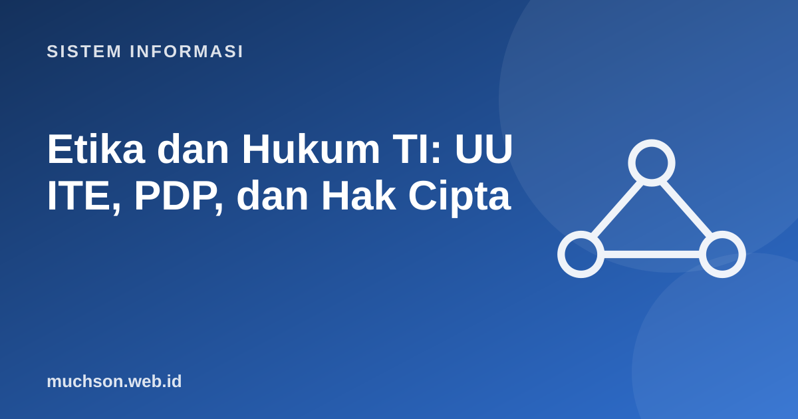

Beranda › Artikel › Sistem Informasi
Sistem InformasiEtika dan Hukum TI: UU ITE, PDP, dan Hak Cipta
Setiap sistem informasi menyimpan dan memproses data manusia, dan keputusan teknis sehari-hari (apa yang dicatat, berapa lama disimpan, siapa yang boleh melihat) memiliki konsekuensi etis dan hukum. Materi ini memberi peta kerangkanya di Indonesia dan cara menerjemahkannya menjadi keputusan rancangan. Ini bukan nasihat hukum; selalu periksa teks peraturan terbaru dan konsultasikan ahli hukum untuk kasus nyata.
Sebaiknya sudah paham: keamanan sistem informasi

Setelah membaca dan mencoba materi ini, Anda mampu:
- membedakan etika, hukum, dan kebijakan organisasi
- menyebutkan pokok pengaturan UU ITE dan UU Pelindungan Data Pribadi
- menjelaskan hak subjek data dan kewajiban pengendali data
- memahami hak cipta dan jenis lisensi perangkat lunak
- menerapkan privacy by design dalam rancangan sistem
Etika, hukum, dan kebijakan
| Sumber | Penegakan | Contoh | |
|---|---|---|---|
| Hukum | Peraturan perundang-undangan | Negara (sanksi pidana, perdata, administratif) | Mengakses sistem tanpa hak |
| Kebijakan | Aturan organisasi | Sanksi disiplin | Larangan memasang perangkat lunak tak berlisensi |
| Etika | Nilai dan kode profesi | Reputasi, kesadaran, organisasi profesi | Menolak membangun sistem yang menyesatkan pengguna |
Sesuatu dapat legal tetapi tidak etis (menjual data perilaku pengguna yang diperoleh dengan persetujuan yang membingungkan), dan sebaliknya sebagian tindakan etis dapat melanggar kebijakan. Profesional TI dituntut menimbang ketiganya.
Kode etik profesi
ACM Code of Ethics menekankan antara lain: berkontribusi pada kesejahteraan masyarakat, menghindari bahaya, jujur, adil dan tidak diskriminatif, menghormati kekayaan intelektual dan privasi, menjaga kerahasiaan, serta bertanggung jawab atas kualitas dan keamanan karya. Di Indonesia, organisasi profesi seperti ID-COMM, APTIKOM, dan perhimpunan lain juga memiliki kode etik masing-masing.
UU ITE
| Pokok | Isi ringkas |
|---|---|
| Dasar | Undang-Undang Nomor 11 Tahun 2008 tentang Informasi dan Transaksi Elektronik, diubah dengan UU Nomor 19 Tahun 2016, dan perubahan kedua dengan UU Nomor 1 Tahun 2024 |
| Informasi dan dokumen elektronik | Diakui sebagai alat bukti hukum yang sah, dengan syarat tertentu |
| Tanda tangan elektronik dan sertifikasi | Tanda tangan elektronik tersertifikasi memiliki kekuatan hukum |
| Penyelenggara sistem elektronik | Wajib menyelenggarakan sistem yang andal, aman, dan bertanggung jawab (diatur lebih rinci dalam PP 71 Tahun 2019) |
| Perbuatan yang dilarang | Antara lain akses ilegal, intersepsi tanpa hak, perusakan sistem, manipulasi dokumen elektronik, dan sebagian bentuk konten tertentu |
Bagi profesional TI, implikasi praktisnya: jangan mengakses sistem atau data tanpa izin, termasuk "hanya mencoba" menguji kerentanan; dapatkan persetujuan tertulis sebelum uji penetrasi; jaga log dan bukti elektronik dengan baik; dan pastikan sistem transaksi memiliki jejak audit.
UU Pelindungan Data Pribadi
Undang-Undang Nomor 27 Tahun 2022 tentang Pelindungan Data Pribadi (UU PDP) disahkan Oktober 2022 dengan masa transisi dua tahun bagi penyesuaian. Struktur dasarnya mirip GDPR Uni Eropa.
| Konsep | Penjelasan |
|---|---|
| Data pribadi umum vs spesifik | Spesifik mencakup misalnya data kesehatan, biometrik, genetika, catatan kejahatan, data anak, data keuangan pribadi; perlindungannya lebih ketat |
| Dasar pemrosesan | Persetujuan yang sah, pemenuhan perjanjian, kewajiban hukum, kepentingan vital, tugas kepentingan umum, atau kepentingan yang sah |
| Notifikasi kegagalan pelindungan | Pemberitahuan tertulis kepada subjek data dan lembaga dalam jangka waktu singkat (paling lambat 3 × 24 jam) bila terjadi kegagalan yang berdampak |
| Sanksi | Administratif (misalnya denda hingga dua persen pendapatan tahunan), serta ketentuan pidana untuk pelanggaran tertentu |
Menerjemahkan hukum menjadi rancangan: privacy by design
import hashlib
# Contoh teknik: pseudonimisasi identitas pada data analitik (hash bergaram), bukan menyimpan NIK mentah
GARAM_RAHASIA = b"simpan-di-pengelola-rahasia-bukan-di-kode" # contoh; nyatakan di vault pada praktik nyata
def pseudonim(nik: str) -> str:
return hashlib.sha256(GARAM_RAHASIA + nik.encode()).hexdigest()[:12]
def mask(nik: str) -> str:
return nik[:4] + "*" * (len(nik) - 8) + nik[-4:]
nik = "3577010101900001"
print("ditampilkan di layar :", mask(nik))
print("identitas untuk analitik:", pseudonim(nik))
print("pengguna sama -> pseudonim sama:", pseudonim(nik) == pseudonim("3577010101900001"))ditampilkan di layar : 3577********0001
identitas untuk analitik: 0e09507e7c7a
pengguna sama -> pseudonim sama: True
Hak cipta dan lisensi perangkat lunak
Di Indonesia, hak cipta diatur dalam Undang-Undang Nomor 28 Tahun 2014. Program komputer termasuk ciptaan yang dilindungi secara otomatis sejak diwujudkan. Pemakaian bergantung pada lisensi yang diberikan pemegang hak.
| Jenis lisensi | Contoh | Pokok ketentuan |
|---|---|---|
| Proprietari (komersial) | Microsoft Windows, Adobe | Dipakai sesuai perjanjian; kode sumber tertutup |
| Permisif sumber terbuka | MIT, BSD, Apache 2.0 | Bebas dipakai, diubah, dan dikomersialkan; wajib menyertakan pemberitahuan hak cipta |
| Copyleft | GPL, AGPL | Karya turunan yang didistribusikan harus dibuka dengan lisensi yang sama |
| Konten terbuka | Creative Commons | Beragam syarat: atribusi, nonkomersial, berbagi serupa |
Menyalin kode dari internet atau mengunduh perangkat lunak bajakan bukan hanya melanggar etika, tetapi dapat menimbulkan risiko hukum dan keamanan. Pastikan lisensi pustaka yang Anda pakai sesuai dengan cara Anda memakainya, terutama untuk produk komersial.
1. Aplikasi kampus meminta KTP, alamat, dan nomor ponsel hanya untuk pendaftaran seminar. Prinsip apa yang dilanggar dan bagaimana memperbaikinya?
2. Mengapa uji penetrasi memerlukan izin tertulis?
3. Sebutkan dua hak subjek data dan bagaimana sistem memenuhinya.
4. Anda memakai pustaka berlisensi GPL dalam produk komersial tertutup. Apa risikonya?
- Etika, hukum, dan kebijakan saling melengkapi; legal tidak selalu etis.
- UU ITE: dokumen elektronik sebagai bukti, tanda tangan elektronik, dan perbuatan terlarang.
- UU PDP: hak subjek data, kewajiban pengendali dan prosesor, notifikasi kegagalan, sanksi.
- Privacy by design: minimisasi, tujuan jelas, persetujuan, keamanan, retensi.
- Hormati hak cipta dan patuhi lisensi.
Tanya jawab
Apakah UU PDP berlaku bagi aplikasi kecil?
Apa itu GDPR?
Di mana membaca teks resminya?
Referensi
- ACM Code of Ethics and Professional Conduct (2018)
- Peraturan.bpk.go.id: Basis data peraturan perundang-undangan (UU ITE, UU PDP, UU Hak Cipta)
- Regulation (EU) 2016/679 (GDPR)
- Choose a License: panduan memilih lisensi sumber terbuka